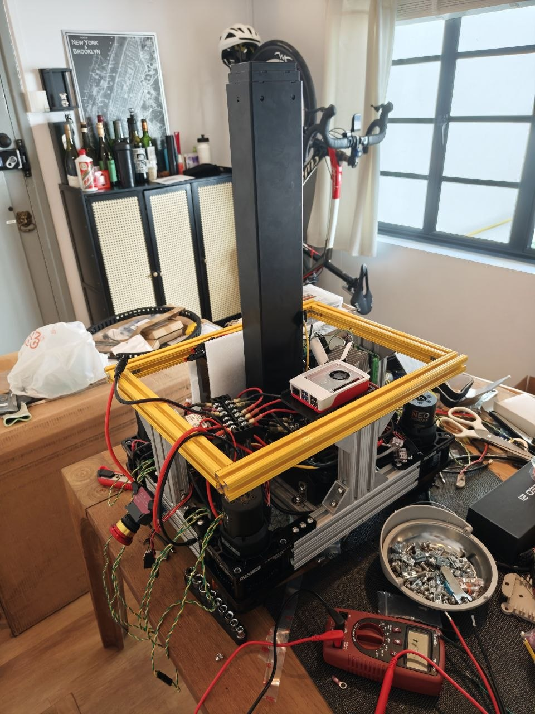
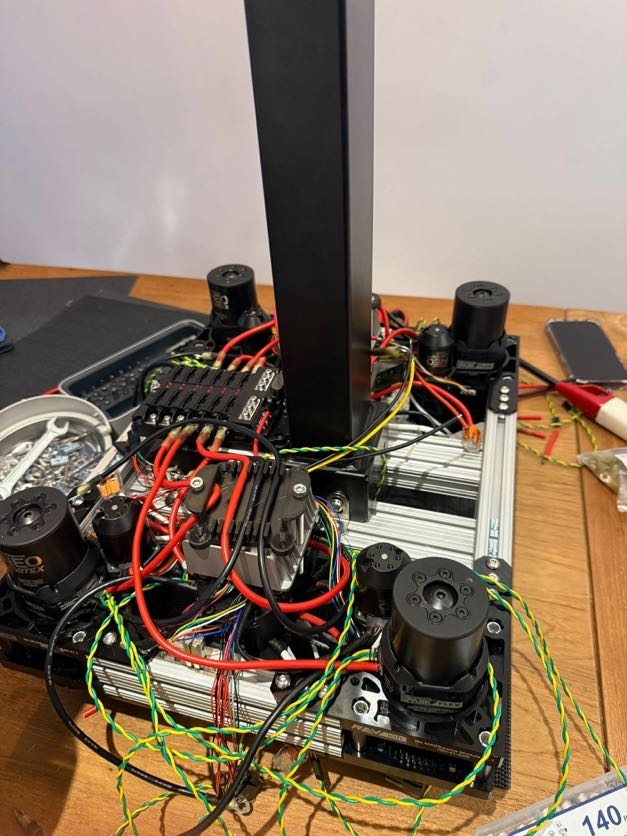
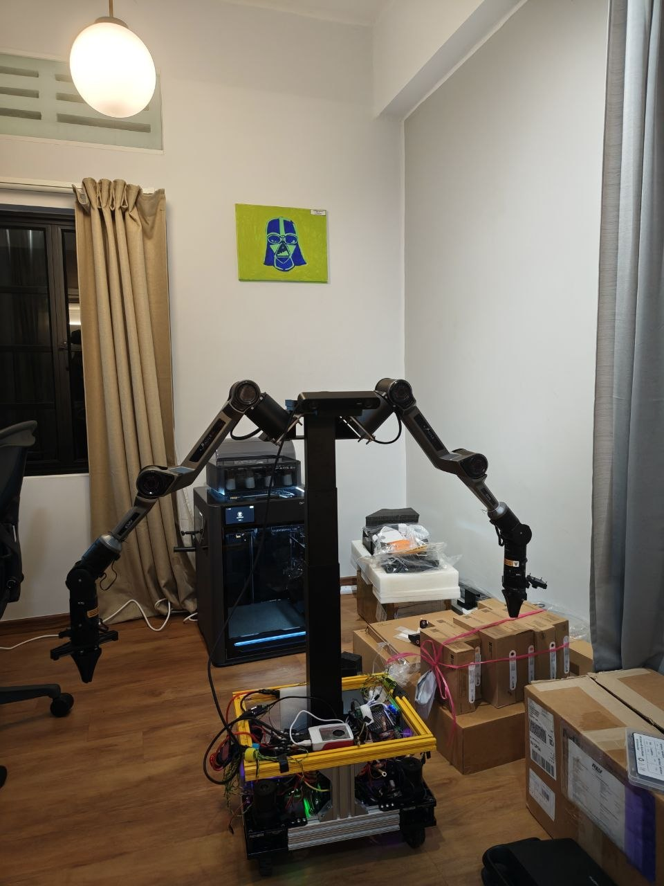

Spearheaded electrical and mechanical troubleshooting of robotic systems during a high-impact deployment phase, resolving technical bottlenecks to maintain project timelines. Designed and engineered full-swerve robot schematics, optimizing hardware configurations for reliable performance during live technical demonstrations at AI Engineer Singapore 2026.
Tech Stack: ROS, Python, CAD (SOLIDWORKS), CAN Protocol, Motor Controllers
Impact: Delivered production-ready swerve-drive platform enabling autonomous navigation—showcased at industry conference.
RoboticsMechanical DesignElectronicsCAN Bus
Videos
Full swerve-drive base during live testing — all four modules driven simultaneously.
Electrical integration: wiring harness, CAN bus, and motor controller setup.
Simulation prototype built in Webots with manual WASD keyboard control for early-stage path validation.
Gallery
Instructing manipulator arms during live technical demonstration.

Full electrical schematics covering motor controllers and CAN bus wiring.

Chassis skeleton during early-stage structural assembly.

YOR — the completed swerve-drive platform ready for deployment.YOR during pre-demo configuration and systems check.